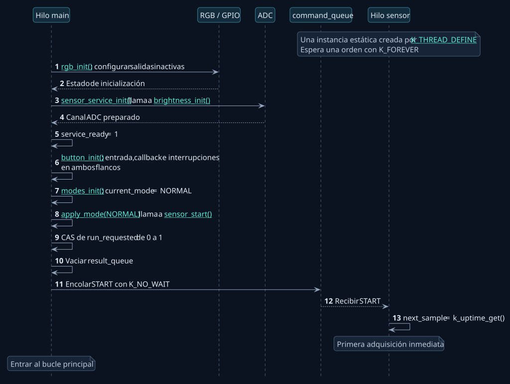
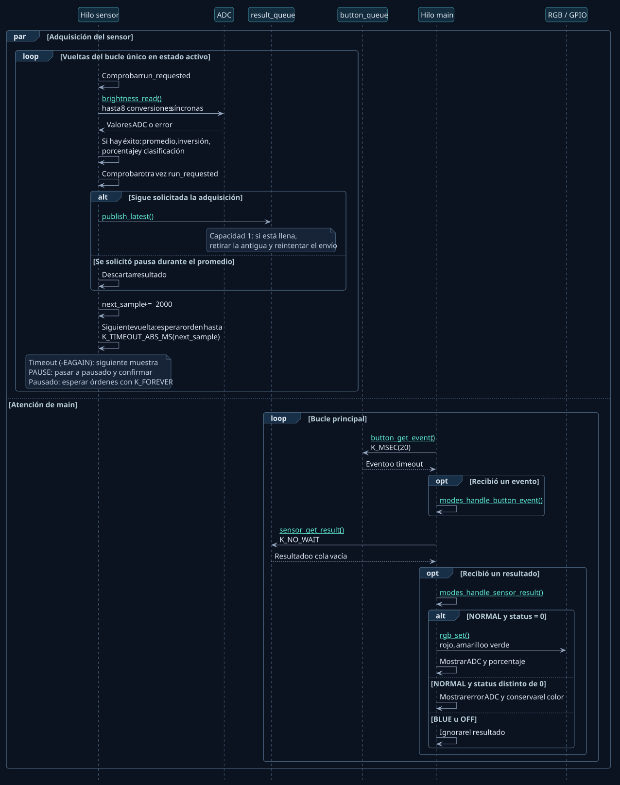
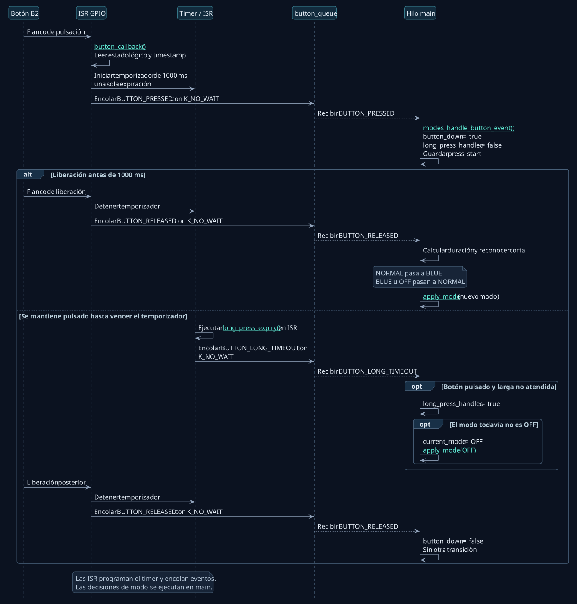
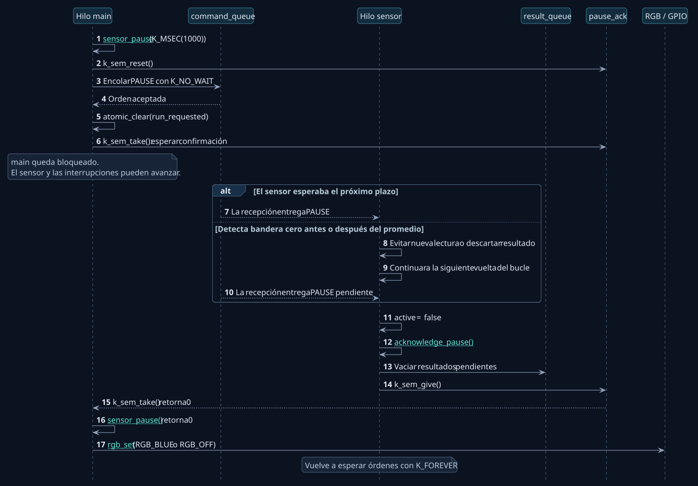

01 · Arranque
Inicialización del hardware y solicitud de la primera lectura.

02 · Muestreo y actualización del RGB
Adquisición del ADC en paralelo con la gestión del botón y el RGB.

03 · Botón, temporizador y modos
Interrupciones, reconocimiento de pulsaciones y transición de modos.

04 · Pausa confirmada antes de BLUE u OFF
Detención de la adquisición y confirmación al hilo principal.